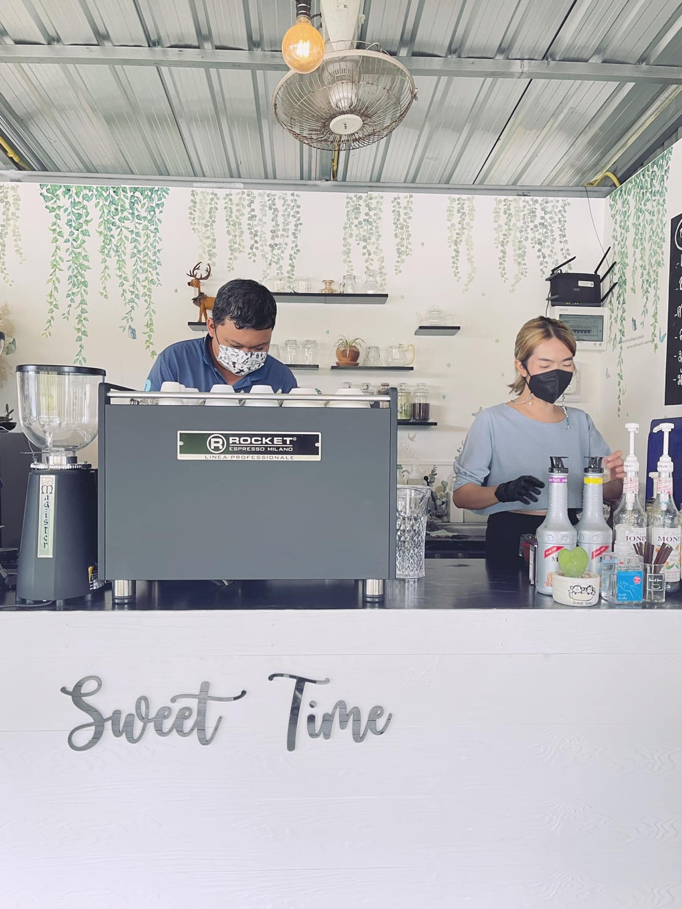

2565 · กิจการ · บันทึกย่อย
ทีมงานรุ่นบุกเบิกบ้านอาจ้อ ต่อยอดเปิดร้านกาแฟตัวเอง

คุณบียยยย์ ถอย Rocket Boxerrr มาแว้ววว 😆🎉
คุณบีย์ 1 ในทีมบุกเบิกบ้านอาจ้อมาแต่เริ่มต้น สาว่ารุบๆอย่างแรงสมัยนั้น จำได้ มั่วตั้งแต่เริ่มซื้อของ ไปกะจี้ 2 คน ซื้ออุปกรณ์กาแฟดริป กับ mokapot คนนึงชอบกินกาแฟ แต่ทำไม่เป็น อีกคนไม่กินกาแฟ ออกความเห็นซื้อกันมั่วหรอย
กลับมาถึงบ้านอาจ้อ หวยมาออกที่คุณบีย์ เพราะทำไม่เป็นเหมือนกัน ดู youtube ไปมั่วไป mokapot นี่น้ำพุ่งแร้ว มัวหวีดอยู่ ไม่ยอมปิดฝา เละะะะ 🤣
แต่ท้ายสุดคุณบีย์จำเป็นต้องมาเปิดร้านกับคุณแฟน เพราะน้องโคเล่นงานหนัก วิชาเครื่องดื่มที่มั่วกันวันนั้น วันนี้กลายเป็นมืออาชีพไปแร้ววว 😇❤️
ดีใจกับคุณบีย์ด้วยน้า 🥰
#บ้านอาจ้อสร้างคน 💕
#บ้านอาจ้อ ❤️